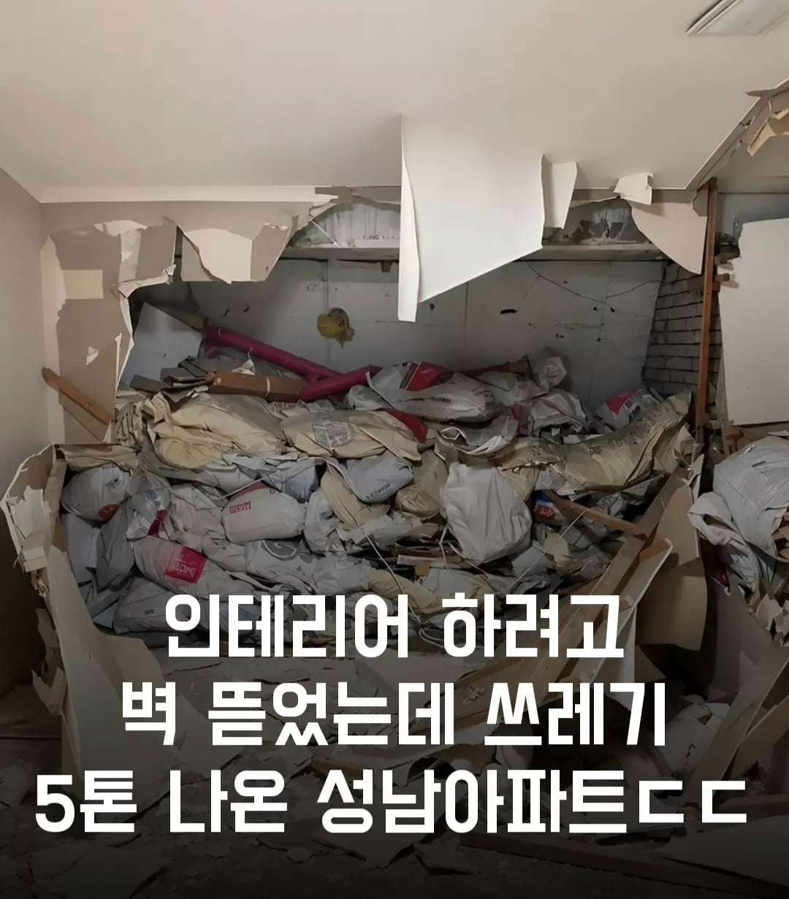
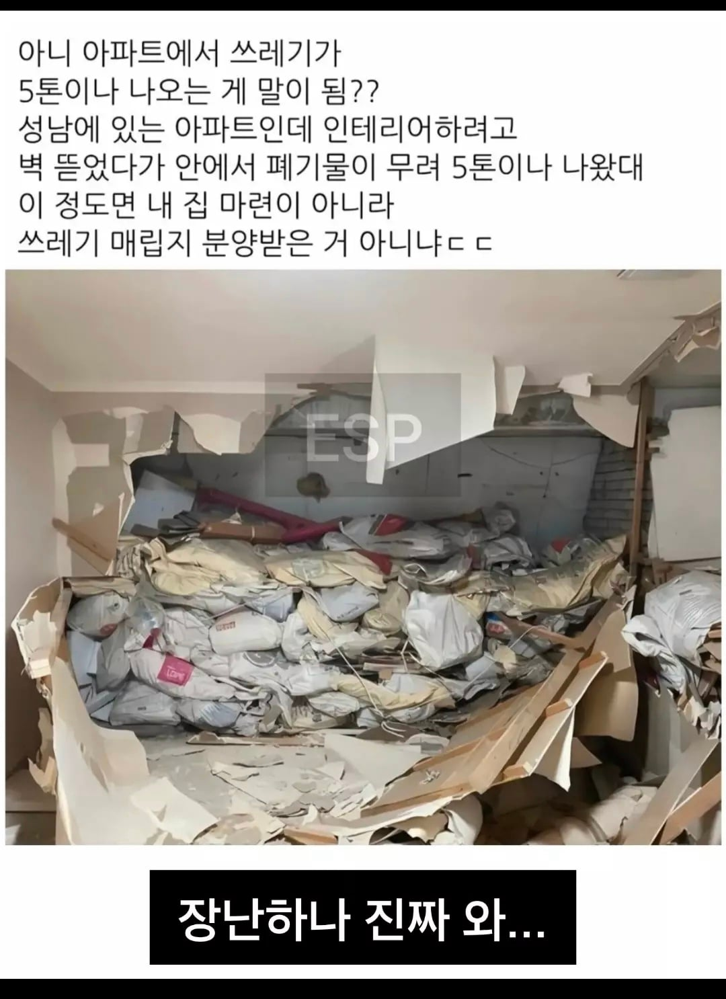
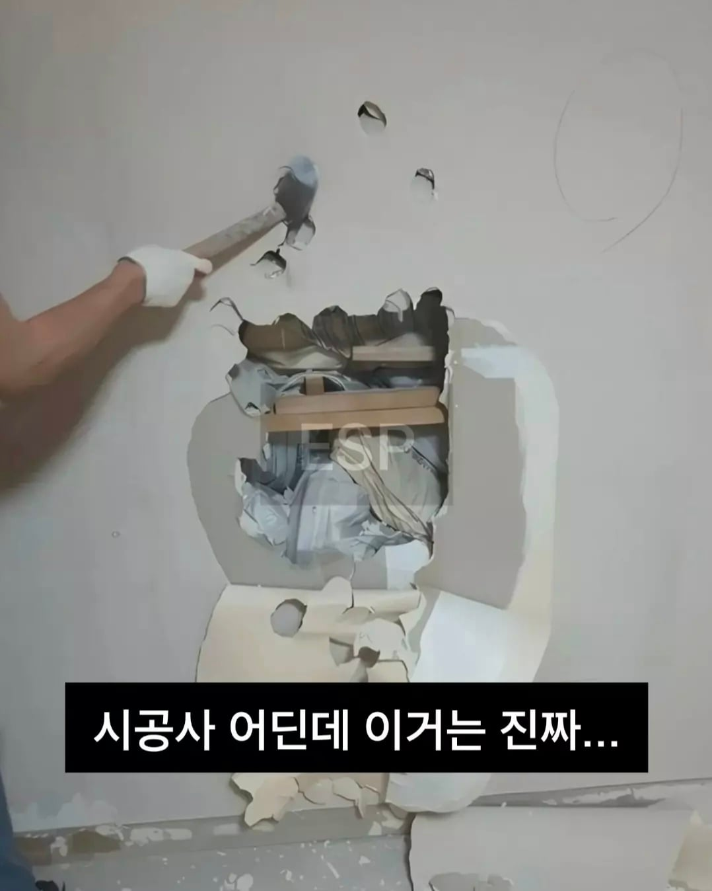
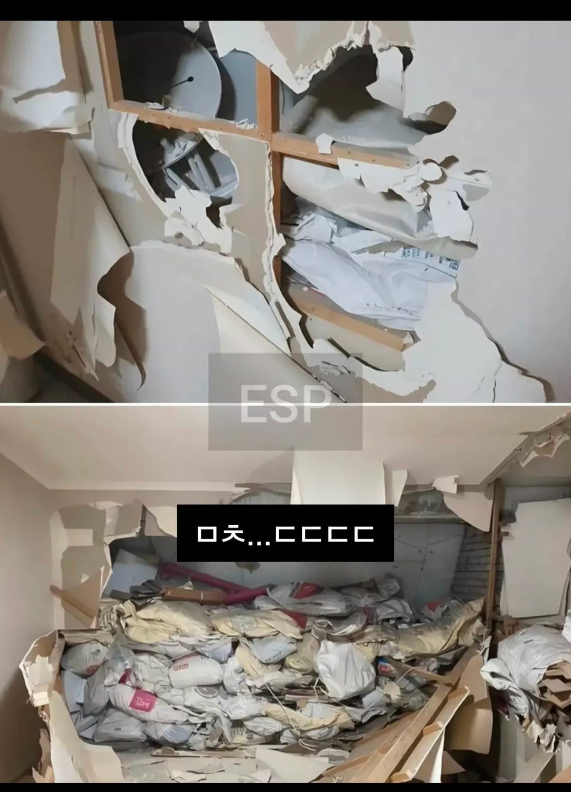
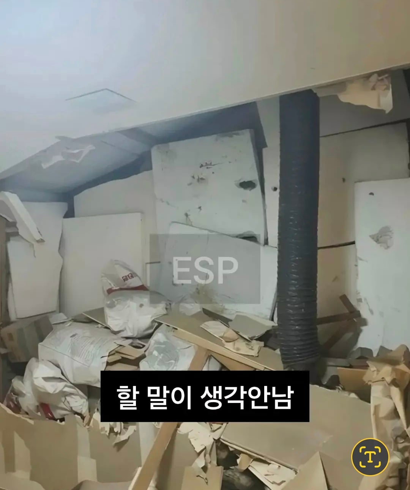
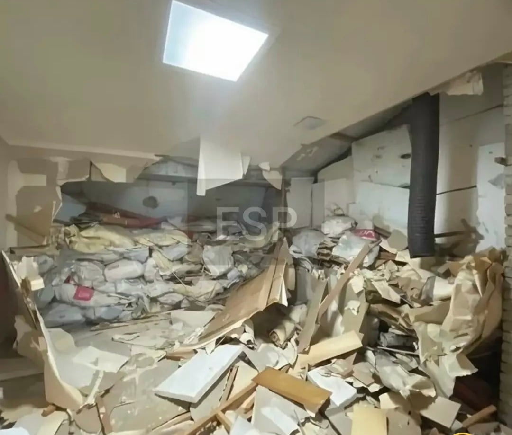

와....






와....
그렇다고 모든 아파트가 저러진 않을텐데,
그럼 그냥 아파트 네임벨류 상관없이 운빨인거임??
어차피 노가다 하는 새기들은 다 똑같으니까??
ㅇㅇ ㅈ운빨임
건축인력은 유목민족처럼 전국을 돌아다닙니다
일본은...목공에 미친나라니까 대신 너는 비꼬듯 인건비 문제라고 했지만 그 인건비 문제가 맞긴함. 일본이 같은면적 건축비 훨씬 많이들어
한국은 노가다 하면 개병신 담배 이빨빠진 커피똔꾸렁내 지방시조끼 아저씨부터 떠올리잖아 일본은 너도 잘 알겠듯이, 복장부터 갖춰입은애들 현장직 기술직 이런거부터 생각나지.
1ldk건 2dk가 됬건 맨션 외에는 전부 목조에 공장에서 그건물 전용으로 미리 계산해둔 목재 조립식으로 가져와서 현장에서 대공들이 맞춰서 짜고 목조라서 오히려 직각반듯하지.
대신에 단열좃도안되고 방음 개안되고.
만숀 이상습 철콘크리트 부터도 일하는 사람들 처우도 한국보다 훨씬 쳐주는데, 그양반들 특유 전문 명인 이런거부터 장비까지 차이가 남.
당연히 한국집이 삐뚤빼뚤하겠지.
이건 현장에있는 새끼들도 영감쟁이 무슨 브랜드 장비쓰면 곧 디지는줄나는 새끼들 은퇴하고 외노자 솎아야겠다만. 인건비가 개 앰병신이니까 전문이나 기술 이딴건 개나줘버리는것
참 사기치기 좋은 나라임 책임 물을려고 하면 폐업 런치겠지 ㅋㅋ
폐업 런
저걸 내부 뭘로 채워야 되는데 그냥 쓰레기 넣어서 채웠네. 저러고 기술이라고 똥가오 텃세 오지게 잡는 그분들이시지
그런데 왜 벽뒤공간이 저렇게 넓음? 1층이라 그런거임?
공간 다쓰면 전용면적 오바되서 일부로 빈공간 죽여서 팔잖아
헐 그런것도 있구나
쓰레기 동네 ㅋㅋ
어허 단열재
어허 쓰레기가 아니라 내장
산업폐기물 분양받으셧네 ㄷㄷ
이거 뭐 몇층몇층이 쓰레기 전용이라고 현직이 말해준게 있는데..
그런거 없고 그냥 시공하는 작업자 양심임.
그냥 답이 없는거구나
이야 ㅋㅋㅋㅋㅋㅋ
벽을 봐서는 아파트가 아닌것 같은데 빌라 건물인듯 저런 사선벽과 지붕이 아파트에 생길 수가 없음
빌라면 영세 시공사가 시공했을테고 폐기물 비용 아끼려고 저지랄 한듯
벽 단열재 비드법인거 봐서는 남부지방일 가능성이 높음
ㅇㅇ 빌라 일조사선 깍이는 부분인듯
어차피 뒤지는 공간 가벽만든건데, 가벽은 사용승인나고 설치했나보네
그래서 마지막 영세업체는 쓰레기처리비 안쓰고 저따 두고 가고
비파괴검사 비슷한 방식으로 검사못하나??
근데 벽을 저렇게 석고보드로 2면 이상을 세팅하는 곳이 있나...
아파트인데요
아파트에 저렇게 죽은공간이 있다는게 놀랍네
쓰레기로 단열하는 최첨단 친환경 기술이라시잖아 ㅋㅋㅋㅋㅋㅋㅋ
이래놓고 뭐? 사람이 안오고 돈이 없어?
미친새끼들 진짜 ㅋㅋㅋㅋ
지금 웃고있는애들 집 벽 다 뜯어보면 저모양일듯.
저런거 시공사 까야함 현장은 거기서 거기고 하청이라 어쩔 수 없다고?
그걸 감리 감독하는게 시공사 책임이지 시발 그걸 못할거면 하청주지 말던가
좀 시공사 공개해라
빨리 로봇도입해야함